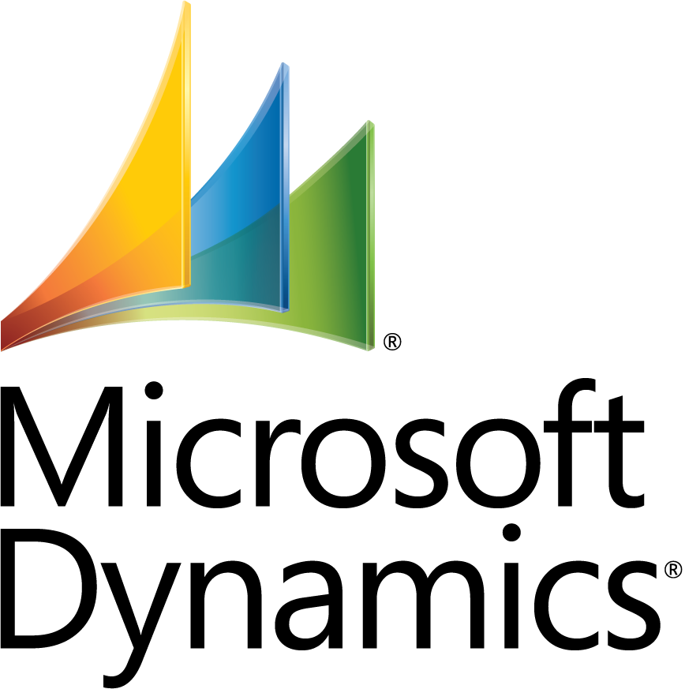
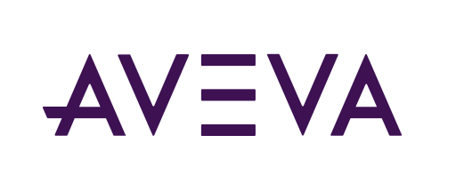
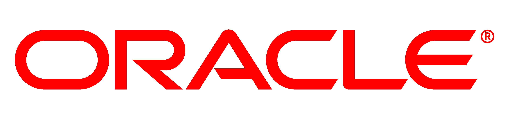
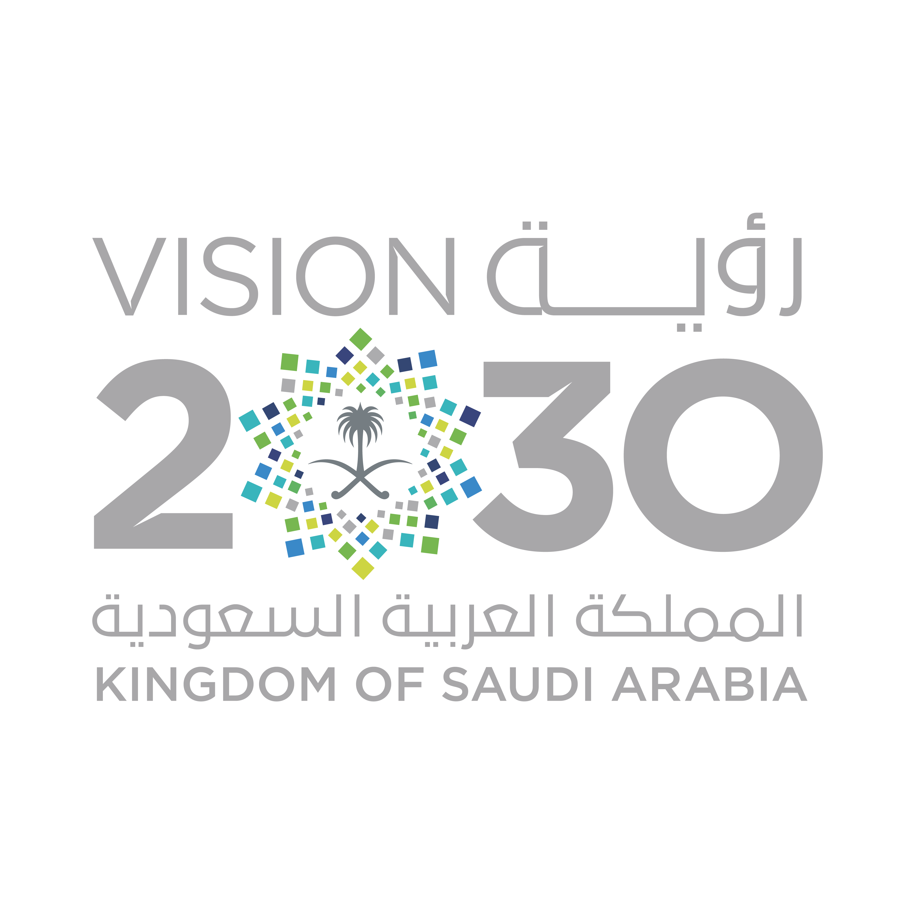

الأنظمة والتقنيات المدعومة





تمكين المصانع السعودية من تحقيق النضج الرقمي، وجاهزية الذكاء الاصطناعي، والتميز التشغيلي المستدام من خلال استشارات قائمة على البيانات.
الأنظمة والتقنيات المدعومة



ديجي لينك هي شركة استشارات صناعية مقرها السعودية متخصصة في أداء التصنيع، والتحول الرقمي، وجاهزية الذكاء الاصطناعي، واستراتيجيات الثورة الصناعية الرابعة، وتقييم مؤشر الجاهزية للصناعة الذكية SIRI وتقييم AIMRI. بخبرة تزيد عن 27 عاماً في التصنيع والصيانة والموثوقية، تدعم ديجي لينك المصانع في جميع أنحاء المملكة لتحسين الأداء التشغيلي، والاستعداد العملي لتبني الذكاء الاصطناعي، والمواءمة مع أهداف رؤية المملكة 2030 الصناعية.
أن نكون الشريك الرائد في تمكين المصانع السعودية من تحقيق النضج الرقمي العالمي والتميز التشغيلي المستدام.
تزويد الصناعات السعودية بخدمات استشارية موثوقة وقائمة على البيانات وفق معايير عالمية لتسريع جاهزيتها للثورة الصناعية الرابعة، ورفع نضجها في الذكاء الاصطناعي، وإحداث أثر تحولي ملموس.
تجمع ديجي لينك بين الاعتماد في تقييمات SIRI و AIMRI وأنظمة إدارة معتمدة وفق ISO 9001 و ISO/IEC 20000-1 و ISO 45001، مما يمنح العملاء ثقة أعلى في جودة التنفيذ، وانضباط العمليات، وإدارة الخدمات، والسلامة المهنية.
مع أكثر من 27 عاماً في التصنيع والصيانة، نطبق منهجيات محسنة للمصانع السعودية—خاصة المصانع الصغيرة والمتوسطة التي تسعى لتحسينات سريعة وفعالة من حيث التكلفة.
نقدم دعماً كاملاً للتحول الرقمي، بدءاً من التقييم الأولي ودراسة الجدوى، مروراً بتصميم خارطة الطريق، وصولاً إلى دعم التنفيذ وتتبع التقدم.
تعمل ديجي لينك وفق أنظمة إدارة معتمدة تعزز موثوقية الخدمات الاستشارية، وجودة التسليم، وحوكمة خدمات تقنية المعلومات، والالتزام بممارسات السلامة والصحة المهنية في بيئات العمل الصناعية.
يعزز جودة الخدمات الاستشارية، وانضباط الإجراءات، وإدارة متطلبات العملاء، والتحسين المستمر في تقديم خدمات التحول الصناعي والدراسات والتقييمات.
عرض الشهادةيدعم تقديم خدمات استشارية تقنية ومنهجية في التحول الرقمي، وإدارة الخدمات، واستشارات الأنظمة والبيانات، وإدارة مشاريع تقنية المعلومات.
عرض الشهادةيعكس التزام ديجي لينك بتطبيق ممارسات آمنة ومنظمة عند تقديم الخدمات الاستشارية في البيئات الصناعية ومواقع المصانع.
عرض الشهادةتساعد ديجي لينك المنشآت الصناعية على فهم وضعها الحالي، وتحديد مستوى النضج المستهدف، وتحويل نتائج التقييم إلى إجراءات تحول عملية قابلة للتنفيذ والقياس.
تقييم منظم للمصانع التي تسعى إلى رفع جاهزيتها للثورة الصناعية الرابعة عبر أبعاد العمليات، والتقنية، والتنظيم.
تقييم عملي للمنشآت التي ترغب في قياس جاهزيتها لتبني الذكاء الاصطناعي بمسؤولية وتحويل فرصه إلى قيمة أعمال قابلة للقياس.
دورة تحول منظمة من 4 مراحل
تدعم ديجي لينك بشكل مباشر ركائز التحول الصناعي في الرؤية. تساعد خدماتنا المصانع في الوصول إلى البرامج الحكومية والتمويل من خلال توفير تقييمات منظمة وخطط تنفيذية.

هل أنت مستعد لبدء رحلة التحول؟ تواصل مع فريقنا المعتمد في تقييمات SIRI و AIMRI اليوم.
البريد الإلكتروني: info@digilink.sa
الجوال: +٩٦٦ ٥٠ ٠٣٣ ٤٦٦٤
الهاتف الثابت: +٩٦٦ ١٣ ٣٤٤ ٧٠٠٠
LinkedIn: DigiLink Saudi Arabia
الموقع: الجبيل الصناعية، المملكة العربية السعودية